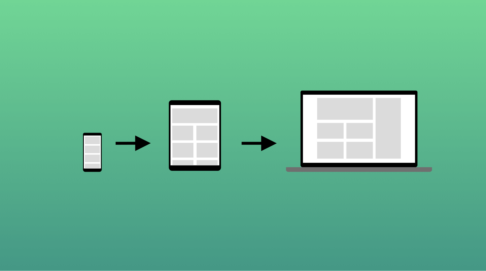

Design Responsivo é uma técnica de estruturação HTML e CSS, que consiste em adaptar o site ao browser do usuário sem que seja necessário definir várias folhas de estilos especíificaspara cada resolução, ou seja, é um tipo de design onde o layout fica fluído e variante de acordo com a resolução do usuário.
Esse tipo de design responsivo teve origem em 2010 com o objetivo de melhorar a experiência de navegação dos usuários de páginas web.
Sem dúvida a responsividade é o conceito mor que define a qualidade de um site, aliada a conceitos como confiabilidade, segurança, performance e preocupação dos criadores para com seu público. Não dá mais para pensar em criar qualquer aplicação web ou website sem priorizar a responsividade como pré-requisito básico e fundamental.
O termo design responsivo foi cunhado por Ethan Marcotte em 2010, e descreveu o uso de três técnicas combinadas:

A primeira foi a ideia de grids fluidas, que já estava sendo explorada por Gillenwater, e pode ser encontrada no artigo de Marcotte, Fluid Grids (publicado em 2009 em A List Apart). A segunda técnica foi a ideia de imagens fluidas. Usando uma técnica muito simples que setava a propriedade max-width com 100%, as imagens seriam reduzidas se a coluna que as continha se tornasse mais estreita que o tamanho intrínseco da imagem, mas nunca aumentariam. Isso permitiu que uma imagem fosse reduzida em tamanho para caber em uma coluna de tamanho flexível, em vez de transbordar, mas não aumentava e nem tornava-se pixelizada se a coluna fosse mais larga que a imagem.
O terceiro componente-chave foi a media query. Media Queries habilitavam o tipo de opção de layout usando o JavaScript, que Cameron Adams havia explorado anteriormente, usando apenas CSS. Em vez de ter um layout para todos os tamanhos de tela, o layout podia ser alterado. As barras laterais podiam ser reposicionadas para a tela menor ou uma navegação alternativa podia ser exibida.
Bootstrap é um framework front-end que fornece estruturas de CSS para a criação de sites e aplicações responsivas de forma rápida e simples e auxilia na responsividade. Além disso, pode lidar com sites de desktop e páginas de dispositivos móveis da mesma forma.
Definir um design responsivo é tarefa custosa e muitas vezes envolve vários riscos como a falta de maturidade dos profissionais envolvidos em sua construção<, falta de tempo e organização para definir os escopos, falta de conhecimento sobre que tipos de websites receberão aquele estilo, bem como o não entendimento da quantidade de mudanças que esse mesmo site irá sofrer com o decorrer do tempo.
Todas estas variáveis devem ser sempre levadas em consideração na hora de implementar um design responsivo, principalmente se o mesmo for servir como framework base para futuros sites/sistemas.